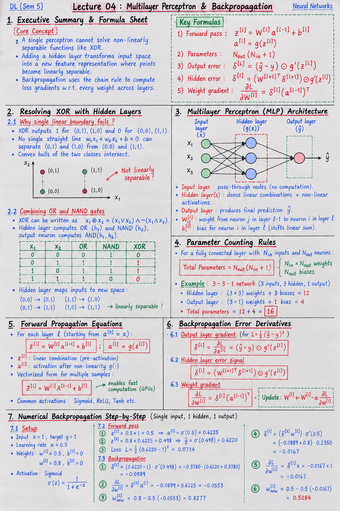

Short Notes & Visual Summary
Handwritten / quick summary notes for Lecture 04:

Click image to open high-resolution version in new tab
The Lecture Format: Simulation Over Formulas
1.1 What the Whiteboard Does
Lecture 4 is delivered as an interactive simulation instead of a written worksheet. The whiteboard at the link above contains two live experiments:
- Page 1 — "Perceptron": All 6 activation functions train simultaneously on the same 2D dataset. You watch the decision boundary, loss, and gradient evolve in real-time for Threshold, Sigmoid, Tanh, ReLU, Leaky ReLU, and ELU side-by-side.
- Page 2 — "Network": A 2-input → 3-hidden → 1-output network where you can choose the activation function for each hidden unit, switch loss functions (MSE, MAE, BCE), and watch training on XOR or concentric circles data.
The purpose: see the theory from Lecture 3 play out quantitatively — vanishing gradient, dead neurons, and loss convergence are not just described, they are measured and animated.
Page 1: Six Perceptrons Training Side-by-Side
2.1 The Setup
The dataset has 120 points in 2D: 60 labelled class 0 (red, centered at (−2, −2)) and 60 labelled class 1 (blue, centered at (+2, +2)). The perceptron has weights w₁, w₂ and a bias b, trained with:
All 6 perceptrons are initialised identically from the same scenario, then updated independently using their own activation function.
2.2 Two Training Scenarios
| Scenario | Initial w₁ | Initial w₂ | Initial b | α | What it tests |
|---|---|---|---|---|---|
| A | 1 | 1 | +12 | 0.05 | Large positive bias → sigmoid/tanh saturated; ReLU active on positive side |
| B | 0.5 | 0.5 | −3 | 0.05 | Negative bias → all z values are negative → ReLU is permanently dead |
2.3 The Four Views
Each of the six panels can switch between four visualizations using the View selector:
- Boundary: The 2D scatter plot with the current decision boundary (black line) and its trail of previous positions (fading grey). Shows whether the line is converging correctly.
- Loss vs Epoch: A log-scale plot of loss over training time. A steeply falling curve = fast convergence; a flat curve = vanishing gradient or dead neuron.
- Loss Bowl: A schematic parabola with a dot showing how far down the bowl the current weight is. Starts at the rim, ideally slides to the bottom.
- Loss Slice: A cross-section of the loss landscape as a function of the bias b alone (holding w₁, w₂ fixed). The current b value is marked — shows whether the optimiser is sliding toward the minimum.
What to Observe: Activation-by-Activation
3.1 Scenario A (b = +12): Large Positive Bias
- Threshold: Gradient is always exactly 0 — weights never move at all. Decision boundary is frozen. The gradient bar stays empty forever.
- Sigmoid: All z values are large and positive (z ≈ 12 + w·x ≫ 0) → σ(z) ≈ 1 for every point → σ′(z) ≈ 0 → gradient ≈ 0. Boundary moves only very slowly — vanishing gradient confirmed live.
- Tanh: Similar saturation. Starts slightly faster than sigmoid (taller derivative peak), but also saturates and effectively stalls.
- ReLU: z > 0 for all data points → f′(z) = 1 for all → gradient is full strength → boundary converges rapidly. ReLU and Leaky ReLU are bit-identical in Scenario A until the first z value goes negative.
- Leaky ReLU: Same rapid convergence as ReLU (since all z > 0 at first). They diverge only after the boundary crosses a point where z < 0.
- ELU: Same as ReLU and Leaky ReLU for z > 0. The curve in the network diagram shows the smooth exponential on the left half of the neuron icon.
3.2 Scenario B (b = −3): Negative Bias (Dead ReLU)
- Threshold: Still frozen — gradient = 0 always regardless of scenario.
- Sigmoid & Tanh: z ≈ −3 + w·x. Gradient is non-zero (S-curve isn't flat at z = −3) → boundary moves slowly but continuously.
- ReLU: z ≤ 0 for every single data point → f′(z) = 0 for all → gradient = 0 exactly. The boundary doesn't move by even one floating-point step across 5,000,000 epochs. This is the dead neuron confirmed live. The gradient bar is completely empty and stays empty even with α = 1,000,000.
- Leaky ReLU: f′(z) = 0.01 for z < 0 → tiny but non-zero gradient → boundary crawls (very slow progress visible in the loss vs epoch plot).
- ELU: f′(z) = eᶻ = e⁻³ ≈ 0.05 for z ≈ −3 → noticeably faster gradient than Leaky ReLU → boundary moves more visibly.
Reading the Gradient Bar
4.1 What the Bar Measures
Below each panel there is a readout row: epoch, accuracy, loss, and a gradient bar. The bar shows the magnitude of the current gradient on a log scale:
This maps the range 10⁻¹⁶ → 10¹ onto a bar from empty to full. Why log scale? Because gradient magnitudes span many orders of magnitude — from effectively zero (sigmoid saturated ≈ 10⁻¹⁰) to full strength (ReLU ≈ 10⁰).
4.2 Key Gradient Patterns to Spot
| Activation | Gradient bar (Sc. A) | Gradient bar (Sc. B) | Interpretation |
|---|---|---|---|
| Threshold | Empty (always) | Empty (always) | Cannot train — derivative is 0 everywhere |
| Sigmoid | Nearly empty | Partial | Vanishing gradient when |z| is large (Sc. A) |
| Tanh | Nearly empty | Partial | Also vanishes, somewhat faster than sigmoid |
| ReLU | Full | Empty (dead) | Fast for z>0, completely dead for z<0 |
| Leaky ReLU | Full (= ReLU early) | Very small | Alive but crawling when z<0 (0.01 slope) |
| ELU | Full (= ReLU early) | Small but bigger | Alive and moving properly — eᶻ > 0.01 for z ≈ −3 |
Page 2: The 2-3-1 Network Simulator
5.1 Network Architecture
The network on Page 2 has a fixed structure:
- Input layer: 2 units — x₁ and x₂ (the 2D features)
- Hidden layer: 3 units (U1, U2, U3) — each can independently use any of the 6 activation functions. Click any hidden neuron to switch its activation via a popup menu.
- Output layer: 1 unit — always uses sigmoid (to output a probability between 0 and 1)
Each neuron is drawn split in two: the left half shows the Σ (weighted sum) and the right half shows a miniature curve of its activation function. Edge thickness shows weight magnitude.
Live readouts: epoch, accuracy, loss, and a dead counter (number of hidden units where every input produces z ≤ 0 → f′ = 0).
5.2 Presets and What They Demonstrate
| Preset | Hidden units | What to observe |
|---|---|---|
| All Sigmoid | σ, σ, σ | Slow convergence or stalling if weights initialise into the saturated zone. Gradient bars may be very thin. |
| All ReLU | ReLU, ReLU, ReLU | Usually fast convergence. But some random seeds may lead to dead=1 or dead=2 — some units whose z goes negative and stays there. |
| One Dead ReLU | ReLU (b=−8), ReLU, ReLU | U1's bias is forced to −8 so it is permanently dead from epoch 0. Dead counter reads at least 1. Network must solve XOR with only 2 effective units. |
| Mixed (default) | ReLU, Sigmoid, ELU | Shows how different activations behave simultaneously in one network. Typically converges robustly. |
Run 10 seeds button: trains 10 different random initialisations for up to 5,000 epochs each and reports how many solved the task (accuracy = 100%) and the median solving epoch. This shows that activation choice affects reliability, not just speed.
Loss Functions in the Simulator
6.1 MSE, MAE, and BCE Compared
Page 2 lets you switch between three loss functions and observe how they change training dynamics:
| Loss Function | Formula | Gradient of output unit | Effect |
|---|---|---|---|
| MSE | 0.5·(ŷ − y)² | (ŷ − y) · ŷ·(1−ŷ) | Gradient shrinks as ŷ approaches 0 or 1 (sigmoid saturates the output too). Can be slow near convergence. |
| MAE | |ŷ − y| | sign(ŷ − y) · ŷ·(1−ŷ) | Constant gradient magnitude (±1 before the sigmoid factor). Less sensitive to large errors but not smooth. |
| BCE | −[y·log(ŷ) + (1−y)·log(1−ŷ)] | (ŷ − y) directly | The sigmoid's ŷ·(1−ŷ) factor cancels out — gradient is simply (ŷ − y). No output-layer saturation. BCE + sigmoid is the standard pairing for binary classification. |
6.2 Key Takeaways from This Lecture
- Vanishing gradient is visible: In Scenario A, the sigmoid gradient bar barely fills. In Scenario B, the ReLU bar is empty. This confirms the Lecture 3 derivations numerically.
- Dead neurons are permanent: Once ReLU lands in the dead zone, no amount of training (or higher α) rescues it — gradient is zero exactly, not approximately.
- ELU > Leaky ReLU on the negative side: Both are alive, but ELU's gradient (eᶻ ≈ 0.05 at z=−3) is about 5× larger than Leaky ReLU's fixed 0.01 — confirmed by the loss curve slopes.
- BCE + Sigmoid is the natural pairing: The gradient simplification ∂L/∂z = ŷ − y removes output saturation and makes training more stable.
- Activation choice affects reliability, not just speed: The "Run 10 seeds" button shows some activation configurations solve the task every time; others fail on some seeds due to dead neurons.
Interactive Whiteboard (Embedded)
The interactive simulation is embedded below. Use the Perceptron and Network tabs inside it to explore both experiments. Click Play to start training.